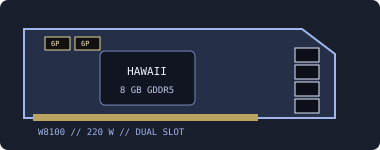

[ LEGACY WORKSTATION GRAPHICS ]
AMD FirePro W8100 8 GB
A 2014 Hawaii-based professional workstation adapter with a wide memory interface and high-density GDDR5 capacity.

Recorded specifications
| GPU | Hawaii-class GCN; 2,560 stream processors. |
|---|---|
| Memory | 8 GB GDDR5, 512-bit memory interface. |
| Interface & power | PCI Express 3.0 x16; 220 W board-power class; two 6-pin PCIe auxiliary connectors. |
| Outputs | Four DisplayPort 1.2 outputs; SDI capability is board-configuration dependent, so inspect the rear panel before planning SDI capture/playout. |
| Physical fit | Dual-slot, full-height reference board, approximately 280 × 111 mm. Confirm two-slot space, card length, bracket and unrestricted airflow for the specific OEM card. |
Workstation & driver compatibility
Intended for substantial workstation visualization and compute applications. It needs two adjacent slots, two 6-pin feeds, a PCIe x16 slot and a chassis/PSU designed for a 220 W graphics card.
- Choose an archived AMD professional driver with W8100 explicitly in its device list and support for the installed OS; current Radeon driver support is not implied.
- Check the workstation vendor's power/thermal validation and the target application's certified-driver matrix before deploying for production work.
- Inspect the dual-slot cooler, full board clearance, both auxiliary sockets and exact SDI/display output panel before use.
Sources & further reading
- AMD — previous drivers and product supportOfficial legacy driver archive; check W8100 and exact OS support in each release.
- AMD — Radeon Pro Software for Enterprise 21.Q2 release notesAMD professional-driver support and release guidance.
- TechPowerUp GPU Database — FirePro W8100Independent specification/dimension cross-check; OEM board details may differ.
Measure the actual board and confirm PSU, wiring and airflow; reference specifications are not a substitute for the card manufacturer's instructions.